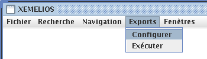
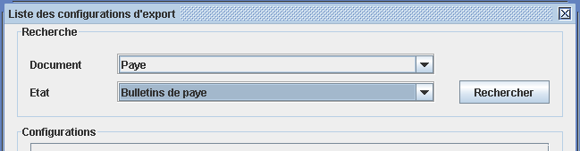
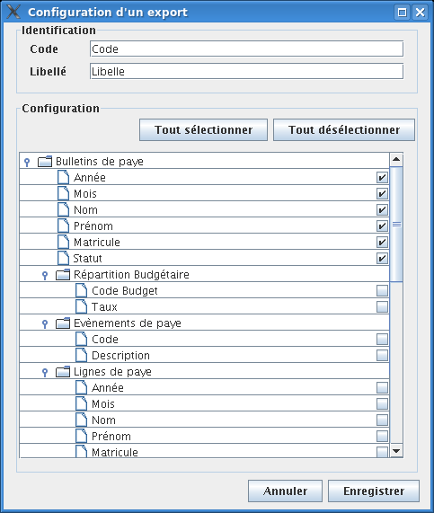
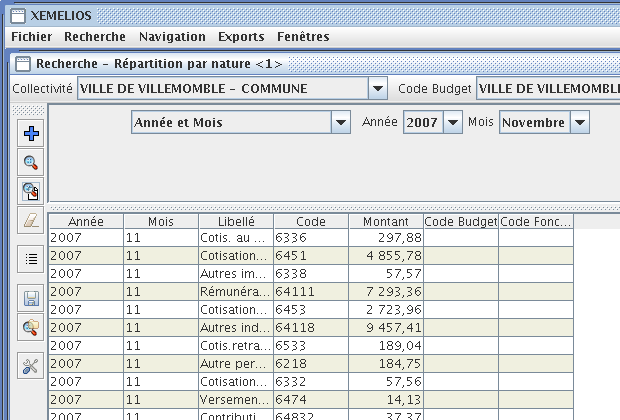
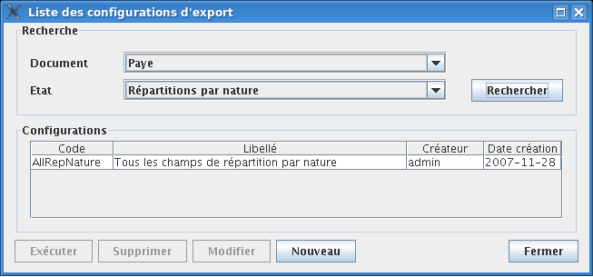
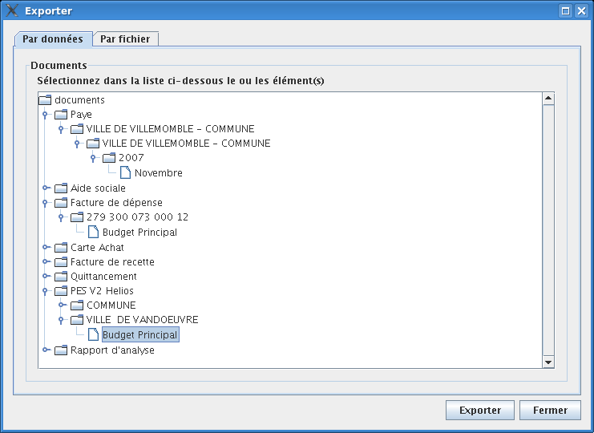
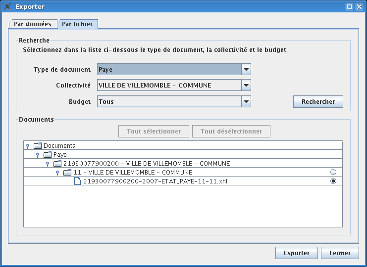

Exports
Depuis la version 3.3, Xemelios permet de réaliser des exports au format
Excel. Ces nouveaux exports permettent d'exporter des données non
affichées et beaucoup plus complètes que les
précédentes versions.
Ces nouveaux exports nécessitent de la configuration et quelques manipulations.
Le format des exports est configurable depuis le menu de configuration.
Configurer un export
Exporter les données trouvées
Exporter une grande quantité de données
Considérations de performances
Copier - Coller
On accède à la configuration d'un export par le menu Export / Configurer...

Un export n'est valable que pour un type de document et un état.
On arrive dans la boite de dialogue de choix de configuration d'Export.
Pour pouvoir créer une nouvelle configuration d'export, il faut sélectionner le type de Document et l'état sur lequel portera cette configuration.

Ensuite, cliquer sur  .
.
Xemelios présente alors la liste des champs exportables pour l'état sélectionné :

Il suffit alors de choisir les champs que l'on veut exporter puis de cliquer sur .
Pour exporter un résultat de recherche, il suffit, comme avec les précédentes versions de Xemelios, d'utiliser le menu Fichier / Exporter... après avoir effectué une recherche. Pour cet exemple, nous exporterons des lignes de Répartition par Nature de Payes.
On commence par effectuer une recherche pour obtenir les éléments que l'on souhaite exporter :

L'action sur le menu Fichier / Exporter... ouvre la boite de choix de configuration d'export. Les configurations existantes pour l'état sélectionné sont déjà affichées, mais il est possible d'en créer de nouvelles ou de modifier des configurations existantes.

Cette fois, un double-clic sur l'une des configurations propose à l'utilisateur de choisir un nom de fichier pour l'export, puis l'export se lance.
Il est possible d'exporter des données sans faire préalablement de recherche ; ceci est utile pour exporter des données pas forcément homogènes ou facilement cherchables.
Pour ce faire, il suffit de passer par le menu Exporter / Executer
Xemelios ouvre alors la boite de sélection de données. Dans l'onglet "Par données", on peut choisir en dépliant les différentes branches de l'arbre les données à exporter. Suivant les types de documents, la structure des branches peut être différente.

L'onglet "Par fichier" permet de sélectionner les données par fichier importé

Il suffit de sélectionner éventuellement un type de document, une collectivité et un budget pour chercher l'ensemble des fichiers importés. Ensuite, en dépliant les branches de l'arbre, il est possible de sélectionner le fichier à exporter à l'aide des boutons radios de l'arbre.
Ensuite, en cliquant sur Exporter, on revient à la boite de choix de configuration.
Les exports sont des processus gourmands en terme de performance. Afin d'optimiser les temps d'export, il est important de bien respecter quelques règles simples :
Dans tous les résultats de recherche il reste possible d'exporter des informations par Copier / Coller. Pour cela, il faut sélectionner les données que l'on veut exporter, puis faire Ctrl + C.
Ensuite, dans Excel, il suffit de faire Ctrl + V ou de passer par le menu Edition / Coller.